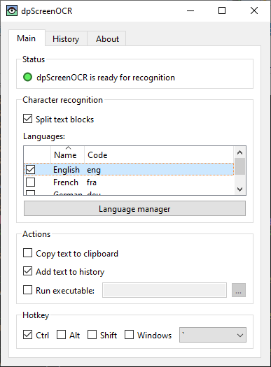

dpScreenOCR
dpScreenOCR is a program that can extract text from any part of the screen. It eliminates the need for manual retyping when working with scanned documents, screenshots, videos, user interface elements, and other situations where it is impossible to copy text in the usual way.

Features:
Llegiu el manual per a obtenir instruccions d’instal·lació, configuració i ús del programa.
Baixeu-vos la versió 1.5.1 (canvis, llicència):

Contribuïu participant amb la traducció o el desenvolupament.